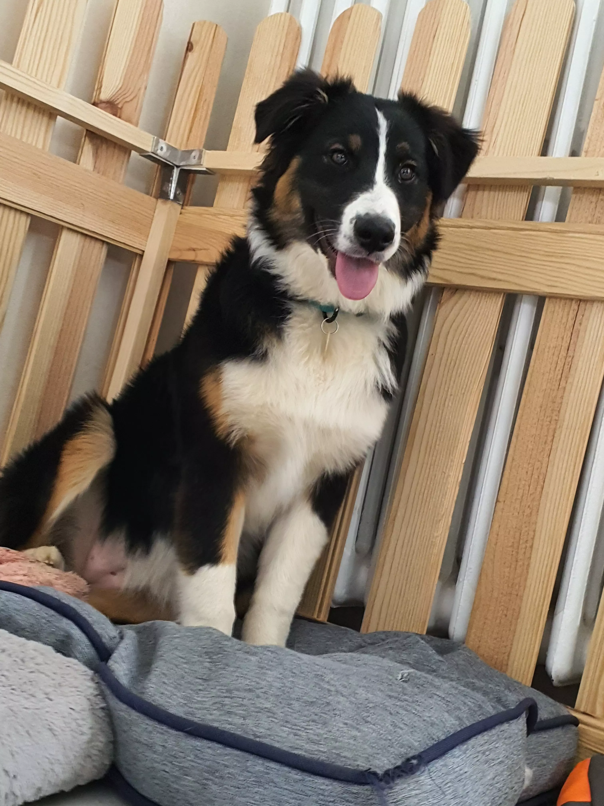

je m'appelle raiponce, je suis un berger australien. j'ai 5 frere et soeur: R'jackson, Rudis, Ruffy, Rebane, Rolie, Romy et R'shadow. A la maison il y a quelques regles:
j'ai une tres belle ligné. je vous presente ma famille sans plus tardé.
Mon papa s'appel l'pinceau,il est né le 21/06/2013. il est excellent en CI, CO , CT, ou CCh en exposition Speciale de race.
c'est un joli chien avec un caractère très énergique , tres joueur. Il a commencé l obérhytmé . Il a fait quelques expo.
le 13.3.2016 - 1ERE EXPOSITION CANINE NATIONALE A VESOUL
Ville : berger australien classe ouverte -
Juge : Mr Thevenon benoit
DCC- B.prortion, ex oeil forme et couleur, tb oreille tb implantée et portée. tb prop, ex dos tendu, tb croupe, ex poitrine, tb aplombs tb angulation. mvmt et allures a travailler.
Resultat : EXCELLENT
Ma maman s'appelle lyra. elle est née le 21/01/2015. elle est excellente en CI, CO , CT, ou CCh en exposition Speciale de race.
13.3.2016 - 1 ERE EXPOSITION CANINE NATIONALE DE VESOUL
Ville : berger australien classe jeune femelle .
Juge : Mr Thevenon benoit
dcc. propo correctes , ex oeil, tb oreille b. implantée. b.prop, dos assez tendu, b. croupe ex poitrail. jeune, tb aplbs, b. angulation. tb mvmt et allures.
Resultat: EXCELENT